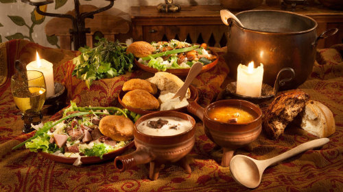

Partners in Crime

“Whit took ye so long?”, asked Agnes looking cross. “The pie needs time tae cool.” The ol’ cook looked him over. “Yer a pure nick! Whits happened tae ye?” Angus looked down at his dirt stained clothes. For a brief moment, he thought about telling her what he discovered. “Well go on! Git yerself cleanit up! Yer father will be expectin’ ye in the dinin’ hall”, she said. “Ay, Nan!”, Angus replied giving her a quick peck on the cheek. The angry look on her face melted into a grin. That was all it took. She couldn’t stay angry with him, and he knew it.
Angus changed into his best white tunic, vest, and tartan wrap then hurried to the dining hall. The family was already seated, talking about the day’s events and passing around the whiskey. He quickly took his seat. Uncle William looked his way. “Leuk wha has finally decidit tae grace us wi his presence!”, he exclaimed giving Angus a heavy slap on the back that nearly knocked his breath out. Angus winced. “Guid evenin’. Many happy returns, Uncle.”, responded Angus with a birthday greeting. Uncle William gave him a nod and went back to pouring his whiskey. “Where hae ye been, Gus?”, his father asked. His father had always called him by his nickname “Gus”. He only used his full name when Angus was in trouble. “Nan asked me tae pick some blaeberries for Uncle’s pie”, he replied. “Guid lad”, said Father giving him a wink. “Agnes is lucky to hae ye helpin’ her. She doesnae git around as guid these days.” Dinner was brought out and everyone dug in. Agnes’ pie was the best part of the meal.
After everyone retired to their chambers for the night, Angus crept down to the kitchen to gather what he needed to put the dragon to sleep. He found Agnes’ apothecary jars and slid the one filled with crushed poppy into a sack. He then headed out back to the meat house. A freshly skinned lamb was hanging on a hook. Angus got to work slicing openings in the meat and stuffing poppy into the creases. “How much poppy daes it tak tae put a dragon tae sleep?”, he wondered. He decided he should use the whole jar. After dressing the lamb, Angus slid a large sack around the corpse and lifted it off the hook. “Nan isnae gonna be happy tae find tomorrow's dinner missin.” Angus grabbed a shovel from the corner of the room, slung the sack of meat over his shoulder, and headed out the door. “Whit are ye doing?” asked a small voice from behind as he was closing the meat house door. Startled, Angus dropped his sack and whirled around. “Whit are ye doin’ up?!”, demanded Angus. His younger cousin, Alick, put his hands on his hips and replied huffily, “A wis goin’ tae the loo when I saw ye sneakin’ out the door...whit are YE doin’?” Angus looked at his cousin, then down at the sack, then back at his cousin. What could he tell Alick? Alick was 4 years Angus’ junior. He was short and chubby with a wild mop of red hair and fair skin covered in freckles. Being the youngest in the clan and not yet having the physique of the men, Alick tended to look up to Angus rather than tease him like the others. “It would be nice tae have a confidant”, thought Angus. He had been dying to tell someone.
“Can you keep a secret?”, Angus asked Alick. “Ay…’course A can”, Alick replied. Angus told Alick the whole story about picking berries, hearing a trapped animal, finding out the trapped animal was a dragon, and almost becoming charred meat. Alick listened intently, paused a moment, then said, “Ye must think A’m an eejit.” Angus looked at him confused. “Ye don’t believe me?” “Father says there are no more dragons. Maybe yer mind was playin’ tricks on ye.” , Alick replied. “I dinnae think my mind is that creative”, said Angus seriously. “A was on my way tae try tae free the creature. Come with me and ye will see that it isn’t jist my mind.” “So, what do ye have in the sack?”, asked Alick nodding toward the sack Angus had dropped. “Food for the dragon. I added a special ingredient tae put the beast tae sleep.” “Is that the lamb whit was for supper tomorrow?”, Alick inquired. “It is”, Angus replied. “Wooo Angus. Ye dinnae plan tae live past 16, do ye?”, laughed Alick. “Whit do ye mean?”, asked Angus. “For one thin’, if father and Uncle John find out we been runnin’ aroond all night, they will have our heids. AND, once Agnes finds tomorrow’s supper missin’, she’ll have the rest of ye.”, said Alick amused. “So…..you want tae help me?”, asked Angus sounding unsure that he should move forward with his plan. “Ay!”, said Alick. “Let’s go!”